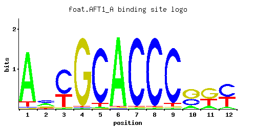
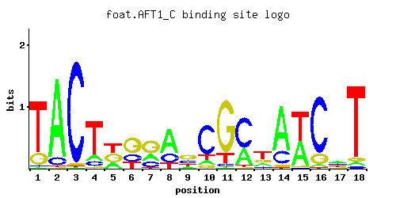
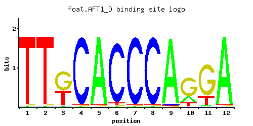
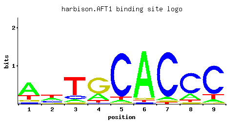
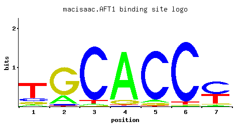
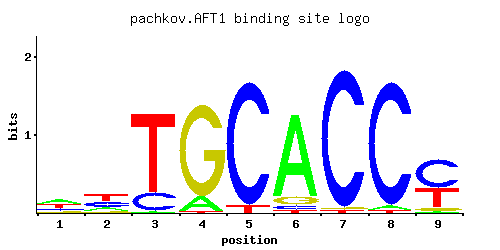
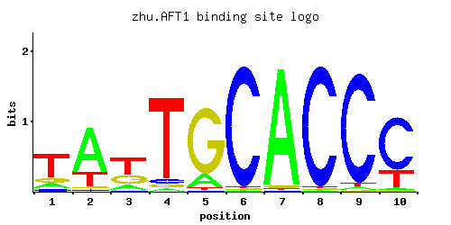
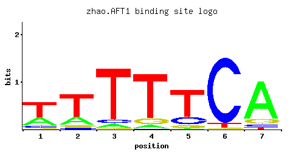

Transcription factor involved in iron utilization and homeostasis; binds the consensus site PyPuCACCCPu and activates the expression of target genes in response to changes in iron availability
01 / RECOMMENDED MATRIX
Best-performing DNA-binding model. Fisher’s P-value 5.65e-26
Information content 11.66
Max PWM score 10.39
Recommended cutoff 7.89
View and copy the recommended matrices ↘ Position frequency matrix (PFM) Copy
A | 0.39 0.37 0.09 0.04 0.01 0.97 0.01 0.03 0.01
C | 0.06 0.13 0.06 0.01 0.91 0.01 0.97 0.95 0.79
G | 0.12 0.11 0.19 0.94 0.01 0.01 0.01 0.01 0.01
T | 0.42 0.39 0.66 0.01 0.08 0.01 0.01 0.01 0.19
Position count matrix (PCM) Copy
A | 39 37 9 4 1 97 1 3 1
C | 6 13 6 1 91 1 97 95 79
G | 12 11 19 94 1 1 1 1 1
T | 42 39 66 1 8 1 1 1 19
Position weight matrix (PWM) Copy
A | 0.20 0.15 -1.27 -2.08 -3.47 1.11 -3.47 -2.37 -3.47
C | -1.10 -0.33 -1.10 -2.89 1.62 -2.89 1.68 1.66 1.48
G | -0.41 -0.49 0.05 1.65 -2.89 -2.89 -2.89 -2.89 -2.89
T | 0.27 0.20 0.72 -3.47 -1.39 -3.47 -3.47 -3.47 -0.52
02 / COMPARATIVE BENCHMARKS
Alternative candidate matrices 11 Historical matrix candidates from the original ScerTF database. Expand a source to inspect its original logo, scores, and matrix values.
AFT1_A Foat et. al. P = 1.17e-16 View matrix ↘ 
Fisher’s P-value 1.17e-16
Information content 16.5
Max PWM score 15.67
Recommended cutoff 10.65
Position frequency matrix (PFM) Copy
A | 0.89 0.33 0.01 0.01 0.02 0.97 0.01 0.01 0.01 0.17 0.15 0.09
C | 0.02 0.38 0.66 0.01 0.91 0.01 0.97 0.97 0.92 0.31 0.01 0.53
G | 0.01 0.21 0.01 0.97 0.01 0.01 0.01 0.01 0.02 0.51 0.53 0.01
T | 0.08 0.08 0.33 0.01 0.05 0.01 0.01 0.01 0.05 0.01 0.31 0.38
Position count matrix (PCM) Copy
A | 89 33 1 1 2 97 1 1 1 17 15 9
C | 2 38 66 1 91 1 97 97 92 31 1 53
G | 1 21 1 97 1 1 1 1 2 51 53 1
T | 8 8 33 1 5 1 1 1 5 1 31 38
Position weight matrix (PWM) Copy
A | 1.02 0.03 -3.47 -3.47 -2.77 1.11 -3.47 -3.47 -3.47 -0.63 -0.76 -1.27
C | -2.20 0.75 1.30 -2.89 1.62 -2.89 1.68 1.68 1.63 0.54 -2.89 1.08
G | -2.89 0.15 -2.89 1.68 -2.89 -2.89 -2.89 -2.89 -2.20 1.04 1.08 -2.89
T | -1.39 -1.39 0.03 -3.47 -1.86 -3.47 -3.47 -3.47 -1.86 -3.47 -0.03 0.17
AFT1_C Foat et. al. P = 0.01613 View matrix ↘ 
Fisher’s P-value 0.01613
Information content 14.86
Max PWM score 17.8
Recommended cutoff 9.97
Position frequency matrix (PFM) Copy
A | 0.88 0.19 0.01 0.54 0.01 0.50 0.04 0.14 0.11 0.16 0.14 0.02 0.22 0.38 0.71 0.01 0.01 0.78
C | 0.05 0.16 0.15 0.01 0.04 0.21 0.01 0.80 0.08 0.44 0.01 0.50 0.54 0.38 0.04 0.02 0.01 0.19
G | 0.03 0.32 0.81 0.01 0.21 0.11 0.62 0.05 0.71 0.30 0.24 0.21 0.23 0.01 0.11 0.96 0.09 0.03
T | 0.04 0.33 0.03 0.45 0.74 0.17 0.33 0.01 0.10 0.11 0.62 0.27 0.01 0.23 0.13 0.01 0.89 0.01
Position count matrix (PCM) Copy
A | 88 19 1 54 1 50 4 14 11 16 14 2 22 38 71 1 1 78
C | 5 16 15 1 4 21 1 80 8 44 1 50 54 38 4 2 1 19
G | 3 32 81 1 21 11 62 5 71 30 24 21 23 1 11 96 9 3
T | 4 33 3 45 74 17 33 1 10 11 62 27 1 23 13 1 89 1
Position weight matrix (PWM) Copy
A | 1.01 -0.52 -3.47 0.52 -3.47 0.45 -2.08 -0.83 -1.07 -0.69 -0.83 -2.77 -0.37 0.17 0.80 -3.47 -3.47 0.89
C | -1.28 -0.12 -0.18 -2.89 -1.50 0.15 -2.89 1.49 -0.81 0.89 -2.89 1.02 1.10 0.75 -1.50 -2.20 -2.89 0.05
G | -1.79 0.58 1.50 -2.89 0.15 -0.49 1.24 -1.28 1.37 0.51 0.29 0.15 0.25 -2.89 -0.49 1.67 -0.69 -1.79
T | -2.08 0.03 -2.37 0.34 0.84 -0.63 0.03 -3.47 -1.16 -1.07 0.66 -0.17 -3.47 -0.33 -0.90 -3.47 1.02 -3.47
AFT1_D Foat et. al. P = 0.001337 View matrix ↘ 
Fisher’s P-value 0.001337
Information content 18.99
Max PWM score 16.13
Recommended cutoff 11.04
Position frequency matrix (PFM) Copy
A | 0.01 0.01 0.01 0.01 0.97 0.01 0.01 0.01 0.96 0.20 0.02 0.97
C | 0.01 0.01 0.01 0.97 0.01 0.94 0.97 0.97 0.02 0.01 0.01 0.01
G | 0.01 0.01 0.57 0.01 0.01 0.01 0.01 0.01 0.01 0.67 0.76 0.01
T | 0.97 0.97 0.42 0.01 0.01 0.04 0.01 0.01 0.01 0.12 0.21 0.01
Position count matrix (PCM) Copy
A | 1 1 1 1 97 1 1 1 96 20 2 97
C | 1 1 1 97 1 94 97 97 2 1 1 1
G | 1 1 56 1 1 1 1 1 1 67 76 1
T | 97 97 42 1 1 4 1 1 1 12 21 1
Position weight matrix (PWM) Copy
A | -3.47 -3.47 -3.47 -3.47 1.11 -3.47 -3.47 -3.47 1.10 -0.47 -2.77 1.11
C | -2.89 -2.89 -2.89 1.68 -2.89 1.65 1.68 1.68 -2.20 -2.89 -2.89 -2.89
G | -2.89 -2.89 1.15 -2.89 -2.89 -2.89 -2.89 -2.89 -2.89 1.31 1.44 -2.89
T | 1.11 1.11 0.27 -3.47 -3.47 -2.08 -3.47 -3.47 -3.47 -0.98 -0.42 -3.47
AFT1_A Fordyce et. al. P = 3.88e-21 View matrix ↘ Sequence logo unavailable in original archive
Fisher’s P-value 3.88e-21
Information content 9.189
Max PWM score 9.28
Recommended cutoff 7.36
Position frequency matrix (PFM) Copy
A | 0.24 0.31 0.02 0.02 0.01 0.01 0.01 0.39
C | 0.39 0.02 0.02 0.03 0.03 0.01 0.55 0.21
G | 0.19 0.55 0.92 0.90 0.01 0.97 0.01 0.23
T | 0.18 0.12 0.04 0.05 0.96 0.01 0.44 0.17
Position count matrix (PCM) Copy
A | 24 31 2 2 1 1 1 39
C | 39 2 2 3 3 1 55 21
G | 19 55 92 90 1 97 1 23
T | 18 12 4 5 96 1 44 17
Position weight matrix (PWM) Copy
A | -0.29 -0.03 -2.77 -2.77 -3.47 -3.47 -3.47 0.20
C | 0.77 -2.20 -2.20 -1.79 -1.79 -2.89 1.12 0.15
G | 0.05 1.12 1.63 1.61 -2.89 1.68 -2.89 0.25
T | -0.58 -0.98 -2.08 -1.86 1.10 -3.47 0.32 -0.63
AFT1_B Fordyce et. al. P = 1.96e-23 View matrix ↘ Sequence logo unavailable in original archive
Fisher’s P-value 1.96e-23
Information content 9.104
Max PWM score 9.27
Recommended cutoff 6.38
Position frequency matrix (PFM) Copy
A | 0.31 0.03 0.02 0.01 0.01 0.01 0.38 0.25
C | 0.03 0.02 0.04 0.02 0.01 0.56 0.21 0.38
G | 0.53 0.92 0.90 0.01 0.97 0.01 0.24 0.19
T | 0.12 0.04 0.04 0.96 0.01 0.43 0.16 0.18
Position count matrix (PCM) Copy
A | 31 3 2 1 1 1 38 25
C | 3 2 4 2 1 56 21 38
G | 53 92 90 1 97 1 24 19
T | 12 4 4 96 1 43 16 18
Position weight matrix (PWM) Copy
A | -0.03 -2.37 -2.77 -3.47 -3.47 -3.47 0.17 -0.25
C | -1.79 -2.20 -1.50 -2.20 -2.89 1.13 0.15 0.75
G | 1.08 1.63 1.61 -2.89 1.68 -2.89 0.29 0.05
T | -0.98 -2.08 -2.08 1.10 -3.47 0.30 -0.69 -0.58
AFT1_C Fordyce et. al. P = 1.67e-25 View matrix ↘ Sequence logo unavailable in original archive
Fisher’s P-value 1.67e-25
Information content 9.038
Max PWM score 8.64
Recommended cutoff 7.32
Position frequency matrix (PFM) Copy
A | 0.32 0.03 0.02 0.01 0.01 0.01 0.38
C | 0.02 0.03 0.04 0.03 0.01 0.56 0.19
G | 0.55 0.93 0.90 0.01 0.97 0.01 0.26
T | 0.11 0.02 0.04 0.95 0.01 0.43 0.17
Position count matrix (PCM) Copy
A | 32 3 2 1 1 1 38
C | 2 3 4 3 1 56 19
G | 55 93 90 1 97 1 26
T | 11 2 4 95 1 43 17
Position weight matrix (PWM) Copy
A | 0.00 -2.37 -2.77 -3.47 -3.47 -3.47 0.17
C | -2.20 -1.79 -1.50 -1.79 -2.89 1.13 0.05
G | 1.12 1.64 1.61 -2.89 1.68 -2.89 0.37
T | -1.07 -2.77 -2.08 1.09 -3.47 0.30 -0.63
AFT1 Harbison et. al. P = 3.59e-22 View matrix ↘ 
Fisher’s P-value 3.59e-22
Information content 8.479
Max PWM score 10.17
Recommended cutoff 7.27
Position frequency matrix (PFM) Copy
A | 0.116 0.060 0.025 0.033 0.050 0.076 0.697 0.344 0.193
C | 0.025 0.044 0.030 0.042 0.023 0.650 0.055 0.063 0.092
G | 0.782 0.713 0.886 0.031 0.881 0.037 0.141 0.260 0.083
T | 0.076 0.183 0.059 0.893 0.046 0.237 0.106 0.333 0.633
Position count matrix (PCM) Copy
A | 11 6 2 3 5 7 69 34 19
C | 2 4 3 4 2 65 5 6 9
G | 78 71 88 3 88 3 14 26 8
T | 7 18 5 89 4 23 10 33 63
Position weight matrix (PWM) Copy
A | -1.01 -1.67 -2.55 -2.27 -1.86 -1.44 0.78 0.07 -0.51
C | -1.97 -1.41 -1.79 -1.46 -2.06 1.28 -1.19 -1.05 -0.67
G | 1.47 1.38 1.59 -1.76 1.59 -1.58 -0.24 0.37 -0.77
T | -1.44 -0.56 -1.69 1.03 -1.94 -0.30 -1.10 0.04 0.68
AFT1 Macisaac et. al P = 1.15e-25 View matrix ↘ 
Fisher’s P-value 1.15e-25
Information content 9.281
Max PWM score 9.17
Recommended cutoff 8.04
Position frequency matrix (PFM) Copy
A | 0.077 0.198 0.026 0.885 0.049 0.008 0.041
C | 0.137 0.035 0.919 0.013 0.897 0.944 0.536
G | 0.121 0.751 0.006 0.089 0.045 0.008 0.042
T | 0.665 0.016 0.049 0.013 0.009 0.040 0.381
Position count matrix (PCM) Copy
A | 7 19 2 88 4 0 4
C | 13 3 91 1 89 94 53
G | 12 75 0 8 4 0 4
T | 66 1 4 1 0 4 38
Position weight matrix (PWM) Copy
A | -1.42 -0.48 -2.51 1.02 -1.88 -3.69 -2.05
C | -0.27 -1.64 1.63 -2.63 1.61 1.66 1.09
G | -0.40 1.43 -3.40 -0.70 -1.39 -3.11 -1.46
T | 0.73 -3.00 -1.88 -3.20 -3.57 -2.08 0.17
AFT1 Pachkov et al P = 5.99e-21 View matrix ↘ 
Fisher’s P-value 5.99e-21
Information content 11.14
Max PWM score 10.38
Recommended cutoff 9.36
Position frequency matrix (PFM) Copy
A | 0.360 0.017 0.011 0.017 0.055 0.008 0.802 0.401 0.301
C | 0.068 0.001 0.014 0.086 0.002 0.860 0.002 0.080 0.130
G | 0.556 0.949 0.974 0.042 0.943 0.001 0.190 0.316 0.172
T | 0.016 0.034 0.001 0.855 0.001 0.132 0.006 0.202 0.397
Position count matrix (PCM) Copy
A | 36 1 1 1 5 0 80 40 30
C | 6 0 1 8 0 86 0 8 13
G | 55 94 97 4 94 0 19 31 17
T | 1 3 0 85 0 13 0 20 39
Position weight matrix (PWM) Copy
A | 0.12 -2.94 -3.37 -2.94 -1.76 -3.69 0.92 0.23 -0.06
C | -0.97 -5.19 -2.55 -0.74 -4.50 1.56 -4.50 -0.81 -0.33
G | 1.13 1.66 1.69 -1.46 1.66 -5.19 0.05 0.56 -0.05
T | -3.00 -2.24 -5.77 0.98 -5.77 -0.89 -3.98 -0.46 0.22
AFT1 Zhu et. al. P = 2.98e-25 View matrix ↘ 
Fisher’s P-value 2.98e-25
Information content 12.9
Max PWM score 12.06
Recommended cutoff 7.9
Position frequency matrix (PFM) Copy
A | 0.14 0.72 0.15 0.03 0.16 0.01 0.96 0.01 0.02 0.02
C | 0.08 0.03 0.03 0.05 0.01 0.97 0.01 0.97 0.95 0.74
G | 0.14 0.03 0.29 0.04 0.81 0.01 0.02 0.01 0.01 0.01
T | 0.64 0.23 0.54 0.88 0.02 0.01 0.01 0.01 0.02 0.23
Position count matrix (PCM) Copy
A | 14 72 15 3 16 1 96 1 2 2
C | 8 3 3 5 1 97 1 97 95 74
G | 14 3 28 4 81 1 2 1 1 1
T | 64 23 54 88 2 1 1 1 2 23
Position weight matrix (PWM) Copy
A | -0.83 0.81 -0.76 -2.37 -0.69 -3.47 1.10 -3.47 -2.77 -2.77
C | -0.81 -1.79 -1.79 -1.28 -2.89 1.68 -2.89 1.68 1.66 1.41
G | -0.25 -1.79 0.48 -1.50 1.50 -2.89 -2.20 -2.89 -2.89 -2.89
T | 0.69 -0.33 0.52 1.01 -2.77 -3.47 -3.47 -3.47 -2.77 -0.33
AFT1 Zhao and Stormo P = 0.001336 View matrix ↘ 
Fisher’s P-value 0.001336
Information content 5.855
Max PWM score 6.59
Recommended cutoff 4.81
Position frequency matrix (PFM) Copy
A | 0.287 0.222 0.060 0.058 0.012 0.001 0.795
C | 0.095 0.050 0.060 0.008 0.201 0.916 0.051
G | 0.035 0.055 0.018 0.115 0.087 0.021 0.112
T | 0.583 0.673 0.863 0.818 0.701 0.062 0.042
Position count matrix (PCM) Copy
A | 28 22 6 5 1 0 79
C | 9 5 6 0 20 91 5
G | 3 5 1 11 8 2 11
T | 58 67 86 81 70 6 4
Position weight matrix (PWM) Copy
A | -0.11 -0.37 -1.67 -1.71 -3.28 -5.77 0.91
C | -0.64 -1.28 -1.10 -3.11 0.11 1.63 -1.26
G | -1.64 -1.19 -2.30 -0.45 -0.73 -2.15 -0.47
T | 0.60 0.74 0.99 0.94 0.78 -1.64 -2.03
03 / EXPERIMENTAL CONTEXT
Gene-level annotations and interactions. Genes bound in ChIP-chip experiments 1 genes No Data
Genes affected by TF deletion 1 genes No Data
Genes supported by both experiments 1 genes No Data
Predicted TF–TF partners 3 genes MIG1, RSF2, SOK2
Explore 3 original interaction plots →